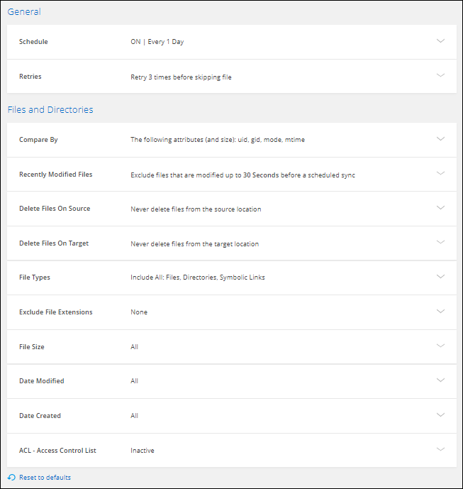

Demander de modifier un document
Demander de modifier un document Modifier sur GitHub
Modifier sur GitHub Guide des contributeurs
Guide des contributeursGestion des relations de synchronisation
Contributeurs
Vous pouvez gérer les relations de synchronisation à tout moment en synchronisant immédiatement les données, en modifiant les horaires, etc.
Synchronisez immédiatement les données
Au lieu d’attendre la synchronisation planifiée suivante, vous pouvez appuyer sur un bouton pour synchroniser immédiatement les données entre la source et la cible.
-
Dans Dashboard, naviguez jusqu’à la relation de synchronisation et cliquez sur
-
Cliquez sur Synchroniser maintenant, puis sur Sync pour confirmer.
Cloud Sync démarre le processus de synchronisation des données pour la relation.
Accélération des performances de synchronisation
Accélérez les performances d’une relation de synchronisation en ajoutant un courtier de données supplémentaire au groupe qui gère la relation. Le courtier de données supplémentaire doit être un New Data broker.
Si le groupe du courtier gère d’autres relations de synchronisation, le nouveau courtier de données que vous ajoutez au groupe accélère également les performances de ces relations de synchronisation.
Imaginons par exemple que vous ayez trois relations :
-
La relation 1 est gérée par le groupe de courtiers de données A
-
La relation 2 est gérée par le groupe de courtiers de données B
-
La relation 3 est gérée par le groupe de courtiers de données A.
Vous voulez accélérer les performances de la relation 1 pour ajouter un nouveau courtier de données au groupe de courtier de données A. Dans la mesure où le groupe A gère également la relation de synchronisation 3, les performances de synchronisation de la relation sont également automatiquement accélérées.
-
Assurez-vous qu’au moins un des courtiers de données existants dans la relation est en ligne.
-
Dans Dashboard, naviguez jusqu’à la relation de synchronisation et cliquez sur
-
Cliquez sur accélérer.
-
Suivez les invites pour créer un nouveau courtier de données.
Cloud Sync ajoute le nouveau courtier de données au groupe. Les performances de la prochaine synchronisation des données doivent être accélérées.
Mise à jour des identifiants
Vous pouvez mettre à jour le courtier de données avec les informations d’identification les plus récentes de la source ou de la cible dans une relation de synchronisation existante. La mise à jour des informations d’identification peut vous aider si vos stratégies de sécurité vous obligent à mettre à jour les informations d’identification de manière périodique.
La mise à jour des identifiants est prise en charge avec toute source ou cible pour laquelle Cloud Sync nécessite des identifiants pour : Azure Blob, Box, IBM Cloud Object Storage, StorageGRID, ONTAP S3 Storage, SFTP et les serveurs SMB.
-
Dans le tableau de bord Sync, accédez à une relation de synchronisation qui nécessite des informations d’identification, puis cliquez sur mettre à jour les informations d’identification.

-
Entrez les informations d’identification et cliquez sur Update.
Remarque sur les serveurs SMB : si le domaine est nouveau, vous devez le spécifier lors de la mise à jour des informations d’identification. Si le domaine n’a pas changé, vous n’avez pas besoin de le saisir à nouveau.
Si vous avez entré un domaine lors de la création de la relation de synchronisation, mais que vous n’entrez pas de nouveau domaine lorsque vous mettez à jour les informations d’identification, Cloud Sync utilisera alors le domaine d’origine que vous avez fourni.
Cloud Sync met à jour les identifiants du courtier en données. Le 10 courtier en données peut prendre jusqu’à ce que ses identifiants soient utilisés pour la synchronisation des données.
Configuration des notifications
Un paramètre Notifications pour chaque relation de synchronisation vous permet de choisir de recevoir ou non des notifications Cloud Sync dans le Centre de notification de BlueXP. Vous pouvez activer des notifications pour la synchronisation des données avec succès, les échecs de synchronisation et les synchronisations de données annulées.

Vous pouvez également recevoir des notifications par e-mail.
-
Modifiez les paramètres d’une relation de synchronisation :
-
Dans Dashboard, naviguez jusqu’à la relation de synchronisation et cliquez sur
-
Cliquez sur Paramètres.
-
Activez Notifications.
-
Cliquez sur Enregistrer les paramètres.
-
-
Si vous souhaitez recevoir des notifications par e-mail, configurez les paramètres d’alerte et de notification :
-
Cliquez sur Paramètres > Paramètres d’alertes et de notifications.
-
Sélectionnez un ou plusieurs utilisateurs et choisissez le type de notification Info.
-
Cliquez sur appliquer.
-
Vous recevrez maintenant des notifications Cloud Sync dans le Centre de notification de BlueXP, avec quelques notifications envoyées par e-mail, si vous avez configuré cette option.
Modification des paramètres d’une relation de synchronisation
Modifiez les paramètres qui définissent la façon dont les fichiers et dossiers source sont synchronisés et gérés à l’emplacement cible.
-
Dans Dashboard, naviguez jusqu’à la relation de synchronisation et cliquez sur
-
Cliquez sur Paramètres.
-
Modifiez l’un des paramètres.

- Planification
-
Choisissez un programme récurrent pour les synchronisations ultérieures ou désactivez la planification de synchronisation. Vous pouvez planifier une relation pour synchroniser les données aussi souvent que toutes les 1 minute.
- Délai d’expiration de la synchronisation
-
Définissez si Cloud Sync doit annuler une synchronisation de données si la synchronisation n’a pas été effectuée dans le nombre d’heures ou de jours spécifié.
- Notifications
-
Vous permet de choisir de recevoir ou non des notifications Cloud Sync dans le Centre de notification de BlueXP. Vous pouvez activer des notifications pour la synchronisation des données avec succès, les échecs de synchronisation et les synchronisations de données annulées.
Si vous souhaitez recevoir des notifications pour
- Tentatives
-
Définissez le nombre de tentatives de synchronisation d’un fichier par Cloud Sync avant de l’ignorer.
- Comparer par
-
Choisissez si Cloud Sync doit comparer certains attributs lorsqu’il détermine si un fichier ou un répertoire a été modifié et doit être à nouveau synchronisé.
Même si vous décochez ces attributs, Cloud Sync compare toujours la source à la cible en cochant les chemins, la taille des fichiers et les noms des fichiers. En cas de modifications, il synchronise ces fichiers et répertoires.
Vous pouvez choisir d’activer ou de désactiver Cloud Sync pour comparer les attributs suivants :
-
Mtime : dernière heure modifiée pour un fichier. Cet attribut n’est pas valide pour les répertoires.
-
Uid, gid et mode : indicateurs d’autorisation pour Linux.
-
- Copier pour objets
-
Vous ne pouvez pas modifier cette option après avoir créé la relation.
- Fichiers récemment modifiés
-
Choisissez d’exclure les fichiers récemment modifiés avant la synchronisation planifiée.
- Supprimer des fichiers sur la source
-
Choisissez de supprimer des fichiers de l’emplacement source une fois que Cloud Sync a copier les fichiers vers l’emplacement cible. Cette option inclut le risque de perte de données car les fichiers source sont supprimés après leur copie.
Si vous activez cette option, vous devez également modifier un paramètre dans le fichier local.json du courtier de données. Ouvrez le fichier et mettez-le à jour comme suit :
{ "workers":{ "transferrer":{ "delete-on-source": true } } } - Supprimer des fichiers sur la cible
-
Choisissez de supprimer des fichiers de l’emplacement cible, s’ils ont été supprimés de la source. La valeur par défaut est de ne jamais supprimer de fichiers de l’emplacement cible.
- Types de fichiers
-
Définissez les types de fichiers à inclure dans chaque synchronisation : fichiers, répertoires et liens symboliques.
- Exclure les extensions de fichier
-
Spécifiez les extensions de fichier à exclure de la synchronisation en tapant l’extension de fichier et en appuyant sur entrée. Par exemple, tapez log ou .log pour exclure les fichiers *.log. Un séparateur n’est pas nécessaire pour les extensions multiples. La vidéo suivante présente une courte démonstration :
- Exclure les noms de répertoire
-
Spécifiez un maximum de 15 répertoires à exclure de la synchronisation en saisissant leur nom et en appuyant sur entrée. Les répertoires .copy-Offload, .snapshot, ~snapshot sont exclus par défaut. Si vous souhaitez les inclure dans votre synchronisation, veuillez nous contacter.
- Taille du fichier
-
Choisissez de synchroniser tous les fichiers, quelle que soit leur taille ou uniquement les fichiers qui se trouvent dans une plage de taille spécifique.
- Date de modification
-
Choisissez tous les fichiers quelle que soit leur date de dernière modification, les fichiers modifiés après une date spécifique, avant une date spécifique ou entre une plage de temps.
- Date de création
-
Lorsqu’un serveur SMB est source, ce paramètre vous permet de synchroniser les fichiers créés après une date spécifique, avant une date spécifique ou entre une plage horaire spécifique.
- ACL - liste de contrôle d’accès
-
Copiez les ACL depuis un serveur SMB en activant un paramètre lors de la création d’une relation ou après la création d’une relation.
-
Cliquez sur Enregistrer les paramètres.
Cloud Sync modifie la relation de synchronisation avec les nouveaux paramètres.
Suppression de relations
Vous pouvez supprimer une relation de synchronisation si vous n’avez plus besoin de synchroniser les données entre la source et la cible. Cette action ne supprime pas le groupe du courtier de données (ou les instances individuelles du courtier de données) et ne supprime pas les données de la cible.
-
Dans Dashboard, naviguez jusqu’à la relation de synchronisation et cliquez sur
-
Cliquez sur Supprimer, puis cliquez à nouveau sur Supprimer pour confirmer.
Cloud Sync supprime la relation de synchronisation.